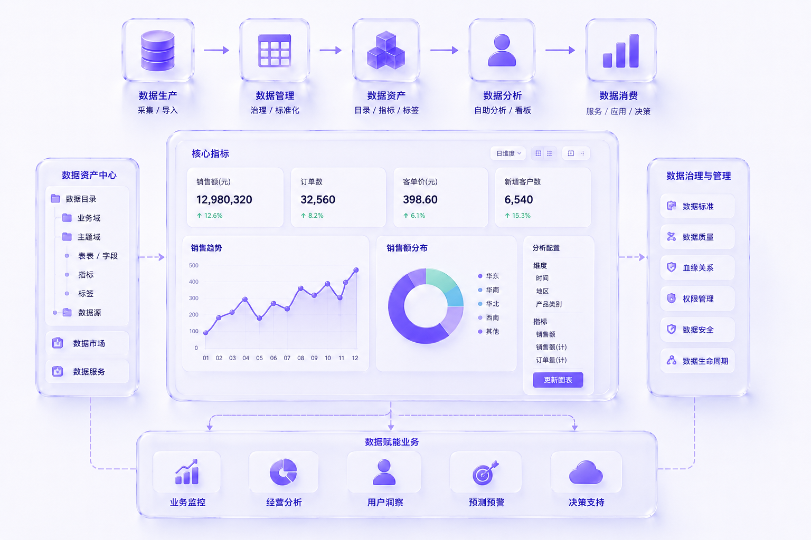

The core challenge of data products usually comes from complex data assets, unclear metric definitions, hard-to-understand field rules, unintuitive analysis paths, and opaque permission states.
My design focus is to lower the threshold for using data, so business users, data analysts, and managers can smoothly move from finding data to understanding data, using data, and forming judgments.
Complete Data Experience Chain
In the design process, I build a complete experience chain around data assets, data consumption, analysis configuration, and result expression.
Users need to know what data is available, what it represents, whether they have permission to use it, how to select fields and filters, how to generate charts and dashboards, and how analysis results can be saved, published, and reused.
Through clear information hierarchy, field configuration, filtering logic, chart expression, and status feedback, complex data capabilities become more intuitive and actionable.
Stable Analysis Paths
The focus of data platform design is not only to display data, but to help users establish stable analysis paths.
Business users need to quickly find usable data and complete basic analysis; analysts need more flexible field, metric, and chart configuration; managers need clear judgments from dashboards and reports.
The design needs to balance professional capability and ease of use, so the data platform moves from being a data entry point to a working system that truly supports business decisions.
Complex Data Product Scenarios
This kind of design is especially suitable for data asset management, data marketplaces, self-service analytics, BI platforms, metric management, data annotation, and data service platforms.
For complex data products, I focus on data discovery efficiency, field comprehension cost, analysis path clarity, chart expression accuracy, permission status visibility, and result reuse.
The final goal is to make data capabilities understandable and usable by more roles, and truly turn data into business judgment.
Suitable Scenarios
Data platforms, data asset management, data marketplaces, self-service analytics tools, BI platforms, metric management, data annotation platforms, data consumption entry points, and data service platforms.
Deliverables
Data product information architecture, data consumption flow design, self-service analytics experience design, chart and dashboard design, field configuration and filtering experience, data status and permission design, data annotation flow design, and platform admin design.